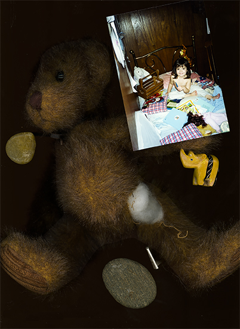
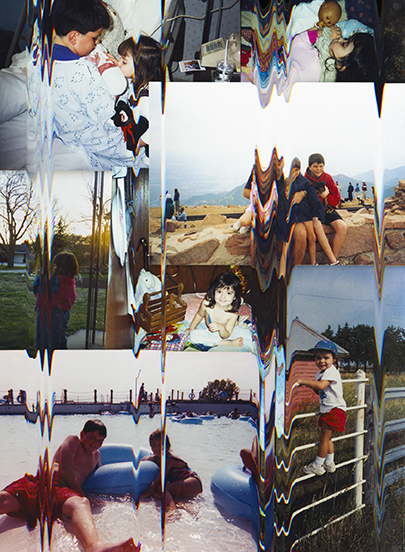
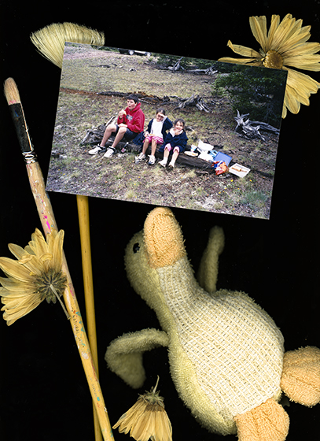
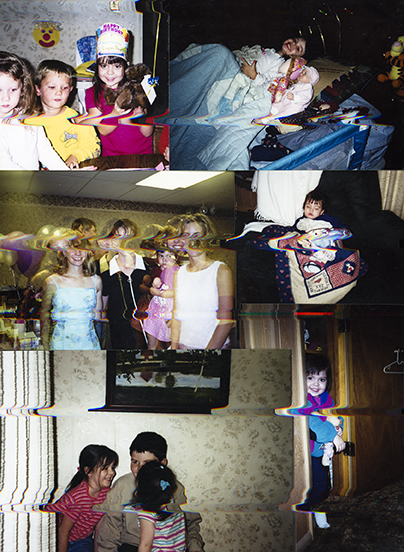

Memories
2018
Digital Photography
I used Scanography to explore my childhood memories, and try to depict how memories can be connected to so many things. They also can be disconnected and distorted.